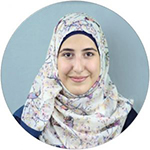

Mentorship Programme
Applications for the Alaa Murabit Mentorship Programme are now accepted through the Omnis Institute
Current Mentees

ZAHRAA SAAB
A Master of Public Health Student at the Dalla Lana School of Public Health

MOHAMED RAHALL
A current undergrad in his final semester majoring in Sociology and minoring in Political Science at the University of Alberta
LINA HAN
A Fulbright Killam Fellow at American University.